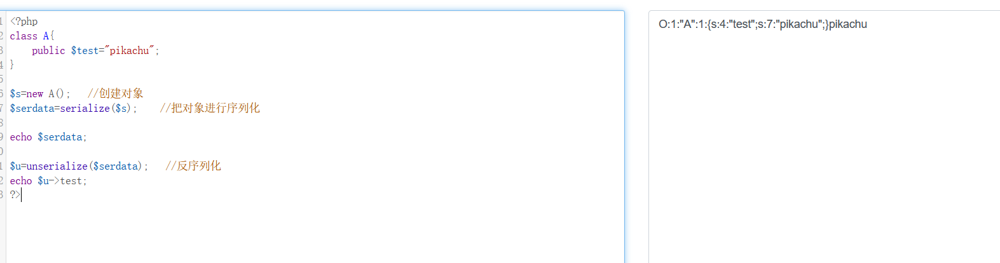
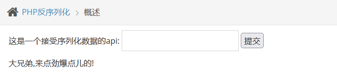
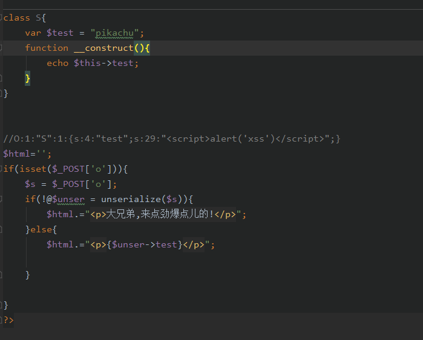
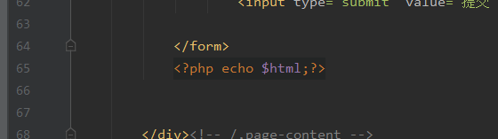

day3-web安全基础四（下午：命令执行、反序列化）
命令/代码执行
原理
命令或代码执行漏洞是指代码未对用户可控参数做过滤，导致直接带入执行命令和代码，通过漏洞执行恶意构造的语句，执行任意命令或代码。
挖掘方法
1 | http://192.168.88.104:8088/vul/rce/rce_ping.php |
修复方法
1、严格过滤用户输入的数据，禁止执行非预期系统命令。
2、减少或不使用代码或命令执行函数
3、客户端提交的变量在放入函数前进行检测
4、减少或不使用危险函数
反序列化
原理
序列化：为了方便传输和存储数据，将要传输或者存储的对象进行序列化生成字节对象，传到持久化服务器上。
反序列化：从内存中读取序列化后的字节对象，将其转换为所需对象。
PHP序列化函数：serialize()
反序列化函数：unserialize()
序列化和反序列化本身没有问题,但是如果反序列化的内容是用户可以控制的,且后台不正当的使用了PHP中的魔法函数,就会导致安全问题
1 | 常见的几个魔法函数: |
挖掘方法
反序列化
https://c.runoob.com/compile/1/
1 | class S{ |
序列化
序列化说通俗点就是把一个对象变成可以传输的字符串,比如下面是一个对象
1 | class S{ |
反序列化unserialize()
就是把被序列化的字符串还原为对象,然后在接下来的代码中继续使用。
1 | $u=unserialize("O:1:"S":1:{s:4:"test";s:7:"pikachu";}"); |
序列化和反序列化本身没有问题,但是如果反序列化的内容是用户可以控制的,且后台不正当的使用了PHP中的魔法函数,就会导致安全问题
1 | 常见的几个魔法函数: |
序列化和反序列化的演示
1 | class A{ |
运行后，可以看到，前面的字符串是序列化后的结果，而“pikachu”则是反序列化后得出的值。

在pikachu靶场中，随便输入内容提交，都是只显示出一句话

构造一个payload来获取到一个正确的序列化后的内容，然后把正确的内容进行提交，让后台对此内容进行反序列化，执行payload中的恶意JavaScript代码，从而获取到我们想要的信息。
1 | <?php |
把得到的序列化好的内容复制到pikachu页面中进行提交，后台就会自动执行恶意的JavaScript代码
1 | O:1:"S":1:{s:4:"test";s:29:"<script>alert('xss')</script>";} |
查看后端源代码分析漏洞原因
后端中他定义了一个类，在类中定义了一个魔法方法__construct()，当这个类被创建时，它就会自动执行。
而后台会去接收一个POST请求，然后对接收的数据进行反序列化，但因为后台没有对接收的数据做任何的过滤等安全措施，导致用户可以在前端进行逆向操作(就像我们前面演示的一样)，从而造成漏洞的产生！
unser.php


修复方法
1、对传入的对象进行严格的过滤检查
2、在反序列化过程执行的文件读写、命令或代码执行函数中是否有用户可控的参数。